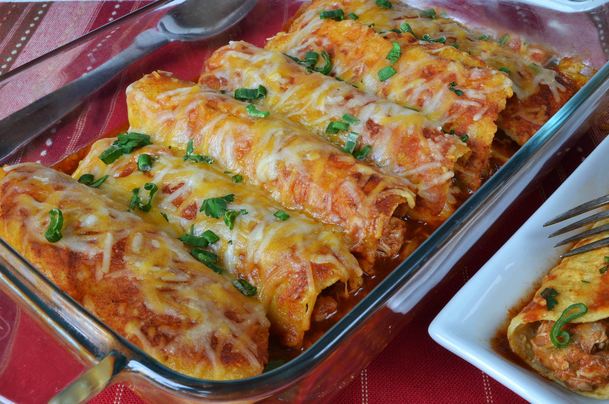

Chicken Enchiladas

Description
This is a food dish called Chicken Enchiladas. It is many rolled up corn
tortillas, filled with chicken, for this recipe, sweet yellow onions,
green chiles, crushed tomatoes, garlic, and many seasonings.
Enchiladas are great for a family dinner, or for an individual, if you are
looking to cook a quick but delicious meal.
Ingredients
- 1 large sweet yellow onion
- 2 cloves of garlic
- 3 tbsp olive oil
- 5 whole green chiles
- 1 cooked rotisserie chicken
- 1 1/2 tsp cumin powder
- 1 tsp garlic powder
- 28 oz crushed tomatoes
- 1 3/4 cups enchilada sauce
- Salt and Pepper
- 14 corn tortillas
- 1 1/2 cups shredded cheddar cheese
- chopped tomatoes
- chopped cilantro
- chopped green onion
- sour cream
- 1 cup of corn meal
- 1 cup of flour
- 1 egg
- 2 cups water
- 1/4 tsp salt
Steps for the Enchilada Mix
- In a large pan, heat olive oil
- Saute onion and garlic until caramelized
- Add green chilies, shredded chicken, cumin, and garlic
- Stir to combine, then add crushed tomatoes and 1/4 cup
of enchilada sauce
- Cook on medium heat for 15 minutes, then add Salt and Pepper
Steps for the Corn Tortillas
- In a bowl, mix corn meal, flour, egg, water, and salt
- Heat up an iron skillet to medium heat and coat it with oil
- With a ladle or measuring cup, pour a thin layer of the corn mix
onto the skillet to make 6" tortilla
- When the tortilla starts to form bubbles, flip and cook for about
30 seconds
- Put the tortillas on a plate and cover them to keep them warm
Putting it all together
- In a baking pan, pour 1/2 cup of warm enchilada sauce on the bottom of pan
- Dip each corn tortilla into warm enchilada sauce and coat on both sides
- Place 2 heaping tablespoons of enchilada filling on tortilla and roll up
- Place enchilada seam-side down in pan
- Repeat until pan is full, and then pour remaining enchilada sauce over the rolled
up tortillas
- Sprinkle cheese and bake at 350F for about 15 minutes
- Once done cooking, top with chopped tomatoes, cilantro, green onions,
sour cream
Return to main page